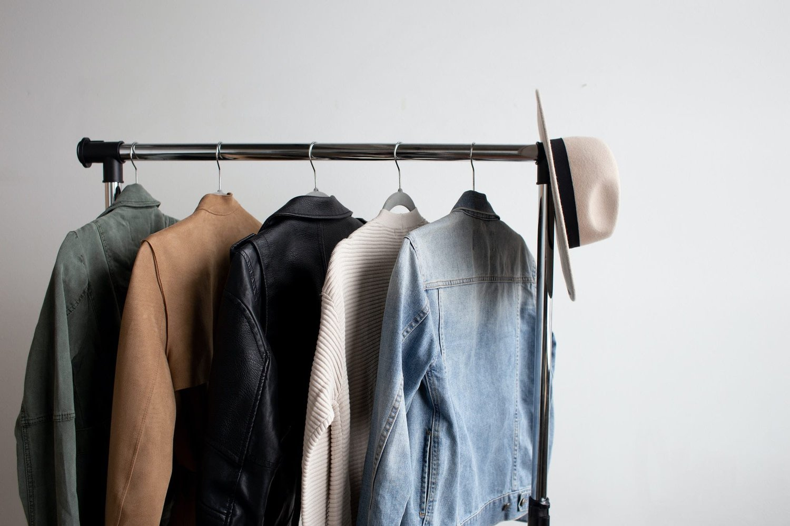
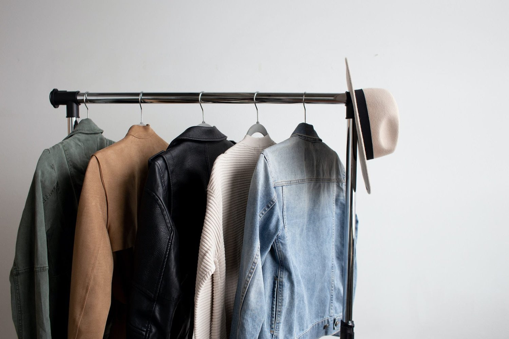

We are a fashion designer, a supplier of quality clothing to consumers.
 

Shirt Dress - A shirt dress is a great option if you’re heading out for evening drinks, going to the office, or having breakfast at your favourite cafe. The straightforward yet beautiful appearance is perfect for looking effortlessly sophisticated while being cool.
Summer 2022 Fashion Guide -
People need to have the essential requirements in addition to a contemporary summer outfit with the newest styles. These clothing types maintain comfort levels without sacrificing their aesthetic statement by being weather-appropriate. These clothes also serve as the foundation for trendy looks that complement the consumer’s preferences in style and design. Thus, fashion manufacturers, merchandisers, and sourcing managers need to have these important summertime clothing items in stock. The brand’s fashion sense will also be highlighted in the minds of consumers, attracting a more loyal base who stick to the ideal design choices from the one source they can trust. This will not only increase sales and provide more cash flow. Search for more affordable and environmentally friendly supplier chains as sourcing managers. Additionally, they need to guarantee that these products will last long enough to provide customers value for their money.......